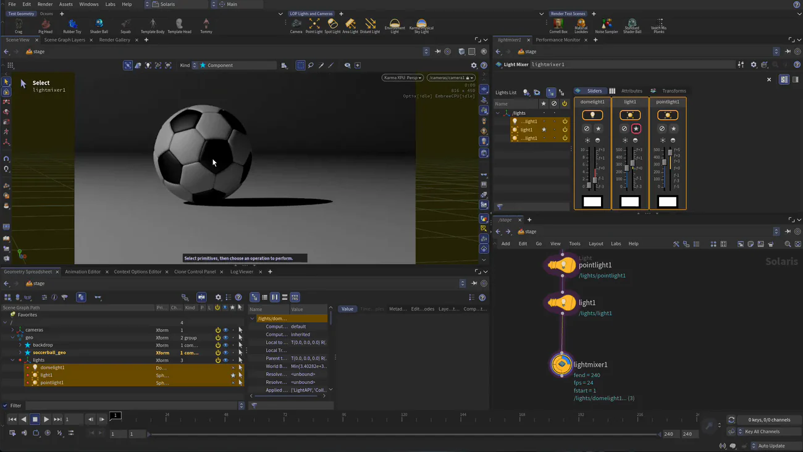

Houdini 22 入門 4 — Solaris に持ち込んでカメラとライトを置く
出典: H22 Foundations | Model Render Animate 4 | Solaris: Objects, Cameras and Lights （SideFX 公式チュートリアル H22 Foundations: Model, Render, Animate の第4回 / Houdini 22 / 12:34 / 英語）。 このページは、上記の動画を見ながら自分用にまとめた日本語の学習メモです。SideFX 公式の翻訳ではありません。 前回はUV Flatten 2つでパッチを塗り分けるでした。
この回で扱うこと
- SOP で作った形はそのままでは Solaris に存在しないこと。
Scene Importで明示的に持ち込みます - LOP では Merge しなくても縦に繋ぐだけでシーンが積み上がること
- 背景を
Grid+Subdivide+Bendで作る手順と、Bend のクセ - カメラをビューに追従させて決め、決まったらロックして壊さないやり方
- ライトの位置を数値で決めずに、影の落ちてほしい場所やハイライトを出したい場所をクリックして決める操作
Light Mixerで非破壊にライトを比べる。ソロ表示で1灯ずつの寄与を見られます
1. Solaris デスクトップに移る
デスクトップメニューから Solaris を選ぶと、/stage を扱う画面に切り替わります。
ここで大事なのは、この世界にはまだ何も無いということです。
SOP で作ったサッカーボールも、持ち込むまでは存在しません。
ビューポートで D を押すと表示オプションが開きます。動画では背景をダークにしています。
2. Scene Import でボールを持ち込む
Tab から Scene Import を置き、ノード名を soccerball にします。
| パラメータ | この回の値 | 補足 |
|---|---|---|
| Destination Path objdestpath | /geo | 持ち込んだものが置かれるシーングラフ上の場所です |
| Objects objects | 取り込む対象 | ここが空だと何も取り込まれません。これが既定なので、置いただけでは何も起きません |
| Force Objects forceobjects | ボールのオブジェクト | オブジェクトレベルで非表示になっていても必ず取り込んで可視扱いにする指定です |
動画が Force Objects を使っているのは、後の作業でオブジェクトを隠してしまっても シーンから消えないようにするためです。公式ヘルプの説明もそのまま 「オブジェクトレベルの状態にかかわらず常に取り込んで可視にする」となっています。
ここでオブジェクトレベルに戻って、名前を box_object1 から soccerball_geo に変えます。
シーングラフ上のパスもこれに追従して /geo/soccerball_geo になります。
オブジェクトの名前がそのまま USD のプリム名になるので、
箱由来の名前を引きずらないうちに直しておくのが良さそうです。
3. 背景を作る — 繋ぐだけで積み上がる
Tab から Grid を置いて、パスを /geo/backdrop にします。
ここで面白いのが繋ぎ方です。Merge を使わず、backdrop をボールのノードに縦に繋ぐだけで、
シーングラフには /geo/backdrop と /geo/soccerball_geo の両方が並びます。
SOP だと繋いだら片方が入力として消費されますが、LOP はレイヤーを重ねていく作りなので、 繋ぐことがそのまま「シーンに足す」ことになります。ここは頭の切り替えが要るところだと思います。
グリッドを曲げて背景にする
背景がまっすぐな板だとライティングが面白くならないので、奥を立ち上げます。 Grid の中に入って組みます。
| ノード | パラメータ | 値 |
|---|---|---|
grid | Size | 80 |
grid | Center | 0, 0, -20（後でアニメーションするボールのために奥へずらしています） |
subdivide | Depth | 2。曲げるための分割を稼ぎます |
bend | Bend（曲げ角） | 75 |
bend | origin — Capture Origin | 0, 0, -30 |
bend | dir — Capture Direction | 0, 0, -1（既定は 0, 0, 1 なので反転させています） |
bend | length — Capture Length | 8。この長さぶんが曲がりの遷移になります |
Bend は「2枚の平行な平面で挟んだ範囲」を曲げるノードです。 範囲の外は変形しないので、手前の床は平らなまま奥だけが立ち上がります。
数値を全部手で入れているのには理由があります。公式ヘルプに明記されていて、 Tab メニューから作った Bend は、シェルフツールと違って範囲を入力形状に合わせてくれません。 だから置いただけでは何も起きず、Capture の3つを自分で決める必要があります。
上の階層に戻るのは U です。
4. カメラを決めて、ロックする
カメラの置き方は3通り紹介されています。
- カメラを追加してハンドルで動かす
camera1を覗いた状態でハンドルを調整する- カメラをビューに追従させて、
スペース+ 左／中／右ドラッグの普段どおりの操作で画角を決める
3番目が一番速いです。普段のビュー操作でそのままカメラが決まります。 そして決まったら、ビューポートで右クリックして Lock Camera を選びます。 これでタンブルしてもカメラから外れなくなるので、決めた画角を壊さずに続きの作業ができます。
動画では言い間違いで "light" と言っていますが、操作しているのはカメラです。 直後に「lock camera」と言っているので、そこで分かります。
5. ライティングは画面をクリックして決める
まずシェルフから Environment Light を置いて、Intensity を 0.5 にします。
ここで表示を Karma XPU に切り替えると、シーンビューの中でそのままレンダリングが回り、
見ながら判断できる状態になります。
そのうえで Point Light を足します。ここがこの回で一番面白いところです。 ライトを空間の中で動かして影を探すのではなく、影を落としたい場所をクリックして決めます。
| 操作 | 効果 |
|---|---|
Shift + F1 | 画面の情報表示を消して見やすくします |
Shadow モードで場所をクリック → Shift | そこに影が落ちるようにライトが配置されます |
| Specular モードでクリック | そこにハイライトが出るようにライトが配置されます |
Ctrl + ドラッグ | ライトの距離を変えます |
Ctrl + Shift + ドラッグ | ライトの強さを変えます |
動画では1灯目を Shadow モードで、2灯目を Specular モードで置いています。 2灯目でハイライトの位置を動かすと、それに連れて影の位置も変わります。 「ハイライトをここに出したい」という決め方がそのままライティングの決定になる、というのが面白いところだと思います。
Intensity は 300 くらいまで上げて、それでも足りないぶんは Exposure で足しています。 環境光が強すぎて影が見えないときは、まず環境光を落とすほうが早いようです。
この作業を全部カメラから見た画面で行っているのが要点です。 空間の外側からライトの位置を想像するのではなく、最終的に見える絵の上で決めています。
6. Light Mixer で比べる
置いたライトを詰めていく段では、ビューポートで右クリックして Light Mixer を置きます。

Light Mixer は入ってきたライトそのものを変えません。 このノードの中で強さや色を触って、そのショット向けの調整だけを重ねる形になります。 だから思い切って振ってみて、気に入らなければノードをバイパスすれば元の状態に戻ります。
便利なのがソロ表示です。1灯ずつ寄与を確認できるので、 「この影はどのライトが作っているのか」がすぐ分かります。 3灯を個別に見て、それから合わせた絵を見る、という進め方ができます。
この回のまとめ
- SOP と Solaris は別の世界です。
Scene Importで持ち込むまで、Solaris 側にボールは存在しません - Scene Import の Objects が空だと何も取り込まれません。これが既定値なので、置いただけで悩みがちなところです
- Force Objects を使うと、オブジェクトレベルで非表示にしても取り込まれ続けます
- オブジェクトの名前がそのまま USD のプリム名になります。
box_object1のままにしないほうが後で読みやすいです - LOP は Merge しなくても縦に繋ぐだけでシーンが積み上がります。SOP との一番大きな感覚の差だと思います
- Tab から置いた
bendは範囲を自動で合わせてくれません。origin/dir/lengthを自分で決める必要があります - カメラはビューに追従させて決めてから Lock Camera。決めた画角が壊れなくなります
- ライトは影やハイライトを出したい場所をクリックして置けます。
Ctrlで距離、Ctrl+Shiftで強さです Light Mixerは非破壊です。ソロ表示で1灯ずつの寄与を確認できます
次の第5回は同じ Solaris の中で、Quick Surface Material と Material Linker を使って テクスチャ4枚（color / reflect / roughness / normal）を割り当てていきます。